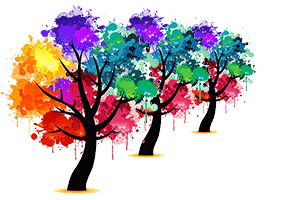
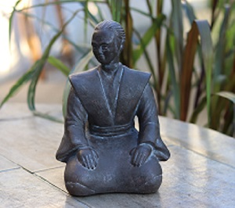
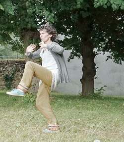
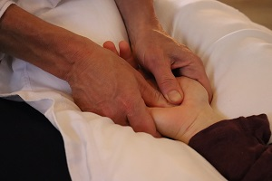
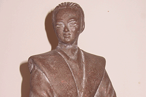

Marie-Laure, coach corporel par le Tai Chi, le Qi Gong, la
Méditation et les Massages Bien-être... Accompagner la prise de conscience
corporelle tant sur le plan physique qu'énergétique est, comme le Tai Chi, tout un art.
Parce que la
conscience corporelle intérieure devient, au fil du temps, point d'appui et force intérieure, au quotidien. Elle
transforme, le rapport à soi, aux autres et au monde, chacun à son rythme...
Parce que ces
transformations, le plus souvent silencieuses, demandent un accompagnement éthique. J'ai choisi de réfléchir cet
accompagnement à l'université de Tours.
 Le parcours universitaire de
ces
dernières années (2011-2015) nourrit, aujourd’hui, mon accompagnement. Pendant le Master IFAC (Ingénierie et
Fonctions d’Accompagnement en formation) je me suis formée aux outils de pédagogie active. ILs alimentent mon
quotidien, autant dans les massages, que dans les cours de Tai Chi Qi Gong ou les ateliers (relaxation,
respiration, etc.) en entreprise ou auprès des particuliers.
Ces outils favorisent la prise de conscience des ressources que chacun développe au fil de ces expériences. Ils
me permettent aujourd’hui d’accompagner les processus de transformations, qui se font sans en avoir l’air, pour
qu’elles deviennent des ressources au quotidien.

Aujourd'hui
accompagner est devenu :
Transmettre la richesse de la
conscience corporelle interneTransmettre l’équilibre corps, esprit, énergieTransmettre les mouvements de Tai Chi, l’assouplissement du corps et de
l’esprit,la méditation
Respecter le rythme de chacun. Etre en alternance
guide, soutien, à côté, derrière. Faire vivre la confiance comme une relation.
Partager la phrase de M.
Csikszentmihaly « La conscience corporelle favorise l’harmonie elle est accessible à tous »
Faire émerger les ressources et savoirs passés inaperçus. Mettre en place des outils de pédagogie active
et réflexive pour favoriser la prise de conscience de l’expérience, l’autonomie, la cohésion du groupe…

Le Tai Chi, au fil de la pratique, développe des attitudes/aptitudes pour mieux vivre au quotidien. Il développe
l’équilibre corps/esprit/énergie. Les pratiquants, à leur rythme, alimentent leurs processus de transformations
silencieuses. Tout l’accompagnement porte alors sur la connaissance de ces transformations et le respect des
motivations individuelles.
Le Tai Chi est venu s'immiscer comme pratique personnelle il y a près de 15
ans. Je m'y suis de plus en plus investie, jusqu’à suivre le processus d’enseignement pour transmettre à mon
tour. Ma formation est maintenant continue et permanente. Depuis 2011 où j’ai commencé à donner des cours, je
suis tous les ans de nombreux stages (en moyenne 23 jours par an). Mon accompagnement s’affine chaque fois un
peu plus. Pour en savoir plus sur l'enseignement
le site de l'association.
Les massages-bien-être prennent en compte chacun dans sa globalité. Avec leurs spécificités,
ils favorisent l’équilibre corps/esprit/énergie. Ils permettent de se détendre, se ressourcer, de soulager les
douleurs. Ils développent, dans la durée, notre conscience corporelle qui devient ainsi un véritable point
d’appui au quotidien. Ils complètent, pour ceux qui le souhaitent, la pratique du Tai Chi.
J'ai rencontré
Michel Lepoulain, en 2009; il m'a transmis le massage Ayurvédique de Swami Yoga Anand, moine ayurvédiste
népalais, fondateur d'APMA Paris et APMA International
le site de l'association.
J'ai appris le massage de Stimulation Veino lymphatique avec Jean Pierre schiltz, kinésithérapeute,la
même année.
Benj Drouet Rousseau m'a transmis le massage taïlandais, nuad bo rarn, l'année passée
le site de l'association.
Avec le Reiki, j’ai découvert le
support énergétique comme base d’accompagnement et pris conscience de mon magnétisme, il y a près de 15 ans.
J'ai suivi tout le processus d'initiation de 2002 à 2005. Il était, pour moi, important d’élargir mes domaines
de compétences pour un accompagnement plus juste. J'ai débuté une formation en thérapie manuelle énergétique
(2003-2009) avec Bruno Dubois, ostéopathe en Sarthe. Le Tai Chi est venu s'immiscer l'année suivante jusqu’à
suivre le processus d’enseignement pour transmettre à mon tour. Dans l’école issue de l’enseignement de Vlady
Stévanovitch, nous associons aux mouvements de Tai Chi et Qi Gong des temps d’assouplissement, de relaxation, de
centrage etc. que je propose en accompagnement ou au cours des massages, au cas par cas. Le Tai Chi et la
formation en thérapie manuelle énergétique alimentent toujours ma recherche vers plus d’équilibre entre le
corps, le mental et l’énergie, au quotidien ; pour ceux que j’accompagne comme pour moi. Le travail réflexif à
l’université m’a permis d’ancrer et faire du lien, de développer des outils de pédagogie active, pour mieux
transmettre.
Au plaisir de vous rencontrer...